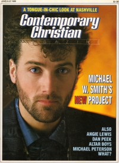
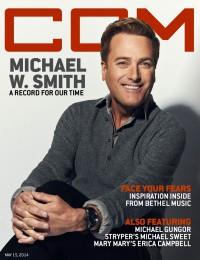
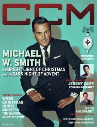

Michael W. Smith
|  June 1986 Contemporary Christian Magazine |
 October 1995 Christian Music Crossroads |
 2000 CCM Brasil |
 October 2010 CCM Digital |
 15 May 2014 CCM Digital |
 15 December 2014 CCM Digital |
 1 March 2016 CCM Digital |
Media coverage:
- Apr 1985 in Contemporary Christian Magazine "Why's He So Excited?", by Bill Littleton
- Jun 1986 in Contemporary Christian Magazine "Smitty Gets Gritty", by Michael McCall
- Jun 1986 in Contemporary Christian Magazine "Michael's Friends Forever", by Michael McCall
- Dec 1986 in CCM "In Concert: Goin' Thru Emotions", by Bruce A. Brown
- Win 1987 in Harvest Rock Syndicate "In Concert: The Big Picture Tour", by Sheree K. Marion
- May 1987 in Christian Herald "A Parent's Guide To Contemporary Christian Music", by Audrey T. Hingley
- Jan 1988 in CCM "Toys in the Band: Michael W. Smith"
- Mar 1988 in Campus Life "Michael W. Smith Looks Back", by Jim Long
- Sep 1988 in CCM "Michael W. Smith", by Roberta Croteau
- Jan 1989 in CCM "In Concert: Rosemont Horizon, Chicago, IL", by Brandie Casner
- Feb 1989 in CCM "In Concert: Memorial Coliseum, Warwick, RI", by Michele Bollman
- Nov 1989 in CCM "In Concert: Walt Disney World, Orlando, FL", by Brett McMurrain
- Dec 1989 in CCM "Another Side of Smitty", by Thom Granger
- Win 1989 in Harvest Rock Syndicate "Concert Review: Memorial Hall, Kansas City, MO", by Thom Granger
- Jan 1990 in CCM "Christian Musician: Playing On A Major Scale", by Bruce Adolph
- Jan 1990 in CCM "In Concert: Community Theatre, Berkeley, CA", by Stuart Winsor
- Nov 1990 in CCM "Forever Your Friend", by Bernie Sheahan
- Apr 1991 in CCM "In Concert: Go West Young Man Tour", by Bruce A. Brown
- Jul 1991 in CCM "In The News: Michael W. Smith's "World" Expanding"
- Jul 1991 in Harvest Rock Syndicate "Concert Review: Michael W. Smith, dc Talk", by Brian Quincy Newcomb
- Oct 1991 in Charisma & Christian Life "Music: Beyond The Walls of the Church", by Timothy L Gilmour
- Jan 1992 in Campus Life "Christian Musicians In The Mainstream", by Jim Long
- Apr 1992 in Religious Broadcasting "Gospel Artists In The Mainstream", by Sandy Smith
- Jul 1992 in Syndicate "Picture Perfect In Progress", by Chris Well
- Sum 1992 in YouthWorker "Media & Culture: representations of evil in culture and it the Bible: Michael W. Smith, The Rapture (1991 movie)", by Steve Rabey
- Sep 1992 in CCM "Michael W. Smith"
- Oct 1992 in CCM "Is Out To Change The World", by Thom Granger
- Feb 1993 in CCM "In The News: Smitty / DC Talk Out To Change Your World"
- Mar 1993 in The Lighthouse "Concert Review: Pittsburgh, PA", by Beth Blinn
- Apr 1993 in CCM "The CCMies [Reader's Awards]: Michael W. Smith"
- Apr 1993 in CCM "In Concert: West Palm Beach Auditorium, West Palm Beach, FL", by Melissa Ruggieri
- Jul 1993 in CCM
- Sep 1993 in CCM "In The News: Smitty Celebrates The 'End of an Era'", by April Hefner
- Nov 1993 in Today's Christian Woman "No Place Like Home", by Marian V. Liautaud
- Jan 1994 in Campus Life "Expressions: Radical News", by Jim Long
- Feb 1994 in CCM "Five Christian Music Couples on Getting Together and Staying Together", by Randy S Rocker
- Jul 1994 in Campus Life "True Love Waits"
- Jul 1994 in CCM "In Concert: Acoustic Tour: Ichthus Festival", by Blythe McIntosh
- 18 Jul 1994 in Christianity Today "News: 75-Year-Old Graham A Hit With Youth"
- Nov 1994 in CCM "dancin' in the church", by Melanie Friebel
- May 1995 in CCM "Integrity and Christian Music: All In The Family", by Mark A Smeby
- Sep 1995 in CCM "Mike & the Mechanics: Of Grace In Action and Music In Motion", by April Hefner
- Sep 1995 in Campus Life "Smitty's Back", by Chris Lutes
- Sep 1995 in CCM "Totally Unrelated Notes"
- Oct 1995 in Christian Music Crossroads "The Home Team", by Calvin Gilbert
- Mar 1996 in CCM "In The News: Smith To Host Doves", by Debra Akins
- Apr 1996 in CCM "In Concert: Target Center, Minneapolis, MN", by Doug Trouten
- Jun 1996 in CCM "Roaring Lambs: Michael W. Smith, Derek T. Jones", by Bob Briner
- Jul 1996 in CCM "Conversations: I'll Lead You Home", by Jim Long
- Aug 1996 in CCM "In The News: AGMA Names Smith As Spokesperson"
- Nov 1997 in Living With Teenagers "Making A Positive Impact", by Mike Nappa
- Mar 1998 in CCM "O For A Thousand Tongues!"
- May 1998 in CCM "Smith and Wesson", by Dave Urbanski
- May 1998 in CCM "Remembering Rich", by Dave Urbanski
- Nov 1998 in New Man "Michael W. Smith"
- Nov 1998 in CCM "In Concert: Memorial Auditorium, Chattanooga, Tennessee", by Sarah Aldridge-McNeece
- May 1999 in CCM "On The Beat: Dove Tales", by Sarah Aldridge-McNeece
- Jun 1999 in Living With Teenagers "Profile: The Gift of Encouragement", by Teresa Lockhart
- Jun 1999 in CCM "On The Beat: Music Cares", by Lindy Warren
- Sep 1999 in Group "Special CCM Section: A Conversation With Michael W. Smith", by Mike Nappa
- Dec 1999 in CCM "Time Traveler", by Wendy Lee Nentwig
- 2000 in CCM Brasil "Viagem No Tempo", by Wendy Lee Nentwig
- Apr 2000 in Charisma & Christian Life "Called To Worship", by Jimmy Stewart
- May 2000 in CCM "Story Behind the Song: This Is Your Time", by Mike Parker
- May 2000 in CCM "Ready to Roar: Lessons For Lambs", by Melissa Riddle
- Jun 2000 in Church Musician Today "A Moment With Michael W. Smith", by Kirk Kirkland
- Jul 2000 in Campus Life "Our Heroes: Michael W. Smith"
- Nov 2000 in Campus Life "What God Is Teaching Me: Michael W. Smith", by Martin Cockroft
- Dec 2000 in Living With Teenagers "The Special Gift of Family", by Teresa Lockhart
- Dec 2000 in CCM "Men of Few Words", by Lou Carlozo
- Aug 2001 in Charisma & Christian Life "Spotlight: Michael W. Smith", by Adrienne S Gaines
- Aug 2001 in CCM "All Access: Falling Forward", by Marcia Bartenhagen
- Sep 2001 in CCM "Gloria In Excelsis", by Beau Black
- Jul 2002 in Moody "How Sweet The Sound: Michael W. Smith"
- Sep 2002 in HM "The Insider: Michael W. Smith", by Staples Taylor
- Dec 2002 in CCM "Best Artist", by Christina Farris
- Jan 2003 in CCM "Insider: On The Fly: Tales of Woe"
- May 2003 in CCM "Tenbrink Remembers: Oh What A Night (and what a killer perm)!", by Michael TenBrink
- Jul 2003 in CCM "25 Powerful People Who Have Made Christian Music What It Is Today: Michael W. Smith"
- Oct 2003 in CCM "20 / 20: 20 Memorable moments from the past 20 years", by Michael Nolan
- Oct 2003 in CCM "A Day In The Life of Michael W. Smith"
- Oct 2003 in CCM "Still Making Friends", by Gregory J. Rumburg
- Oct 2003 in CCM "Disc By Disc"
- Jan 2004 in CCM "2004 Reader's Choice Awards: Maybe The 'W' Should Stand For Worship"
- Jan 2004 in CCM "Standing Room Only: Assembly Hall, Champaign, IL", by Andy Argyrakis
- Sep 2004 in Worship Leader "Table Talk: Smith & Smith", by Davin Seay
- Nov 2004 in CCM "Ready For His Close-up", by Roberta Croteau
- Nov 2004 in CCM "Inside The Actor's Mind", by Roberta Croteau
- Jan 2005 in Christian Music Planet "Smith Flick", by Jenni Isaac
- May 2005 in CCM "List-O-Rama: 5 Proofs of the Secret Connection Between Sci-fi and Christian Music", by Chris Well
- Jun 2005 in CCM "Hall of Fame: Michael W. Smith"
- Jul 2005 in CCM "Insider: Behind The Scenes of The Second Chance", by Andy Argyrakis
- Aug 2005 in CCM "Insider: Extreme Makeover: The Michael W. Smith Edition", by Michael W. Smith
- Aug 2005 in CCM "List-O-Rama: Before They Put The Hip In Hip-Hop", by Chris Well
- Aug 2005 in CCM "Standing Room Only: Healing Rain Tour", by Andy Argyrakis
- Feb 2006 in CCM "Listening In: Michael W. Smith, Steve Taylor, Jeff Obafemi Carr"
- Sep 2006 in CCM "Get Real: Michael W. Smith", by Gregory J. Rumburg
- Nov 2006 in CCM "Eye 2 Eye", by Jay Swartzendruber
- Nov 2006 in CCM "Ladies & Gentlemen: The Rev Michael W. Smith", by Jay Swartzendruber
- Nov 2006 in CCM "Stand: A Sound Response", by Jay Swartzendruber
- Aug 2007 in CCM "Sightings: On The Tube", by Chris Well
- Apr 2008 in CCM "Michael W. Smith", by Mike Donehey
- Apr 2010 in CCM Digital "Hope Continued", by Matt Conner
- Sep 2010 in Charisma "Chatting With: Michael W. Smith"
- Oct 2010 in CCM Digital "Still Wondering after all these years", by Caroline Lusk
- Oct 2010 in CCM Digital "Mission Matters: Make a Difference Tour: Max Lucado, Michael W. Smith, Third Day, TobyMac", by Caroline Lusk
- Mar 2011 in CCM Digital "Tour Spotlight: 2 Friends Tour, Rosemont Theatre, Rosemont, IL", by Andy Argyrakis
- Dec 2011 in CCM Digital "What's New: 2 Friends Tour (Second Leg), Riverside Theatre, Milwaukee, WI", by Andy Argyrakis
- Dec 2011 in CCM Digital "Piano Man", by Caroline Lusk
- Jan 2012 in Christianity Today "Two Minutes With...: Michael W. Smith"
- Dec 2012 in CCM Digital "Tour Spotlight: Wonder, Worship, and Glory Tour, United Center, Chicago, IL", by Andy Argyrakis
- 1 May 2014 in CCM Digital "Musicians Corner: In the Studio: Michael W. Smith", by Andrew Greer
- 15 May 2014 in CCM Digital "Sovereign State", by Caroline Lusk
- 15 Dec 2014 in CCM Digital "The Bright Light of Christmas and the Dark Night of Advent", by Andrew Greer
- May 2015 in HM "Columns: From Nest to Death", by Matt Francis
- 1 Mar 2016 in CCM Digital "How Rootsy Recollection Called Him To Resounding Reverence", by Matt Conner
- Win 2018 in Worship Leader "Interview: Surrounded", by Alex MacDougall
- Feb 2019 in Charisma "Charismata: Michael W. Smith, White Horse"
- May 2020 in Charisma "Grad Guide: Michael W. Smith"
Albums & reviews:
1983: The Michael W. Smith Project
- May 1983 in Campus Life, by Jim Long
- Jun 1983 in Christian Herald, by Ron R. Lee
- Jun 1983 in Contemporary Christian Magazine
- Jul 1984 in The Lutheran, by Steve Rabey
1984: Michael W. Smith 2
- Apr 1984 in Contemporary Christian Magazine, by Thom Granger
- Apr 1984 in Charisma, by Richard Nakamoto
- May 1984 in Campus Life, by Jim Long
- Sep 1984 in Christian Herald, by Peter Gross
1985: Michael W. Smith In Concert [video]
- Mar 1986 in Contemporary Christian Magazine, by Thom Granger
- May 1986 in Campus Life, by Jim Long
1986: The Big Picture
- Jun 1986 in MusicLine
- Jul 1986 in Contemporary Christian Magazine, by Brian Quincy Newcomb
- Sep 1986 in Campus Life, by Jim Long
- Nov 1986 in HIS, by Diana Lynne Pavlac, Ross Pavlac
1987: The Big Picture Tour Video
- Apr 1987 in CCM, by Thom Granger
- Jun 1987 in Charisma & Christian Life
1987: The Live Set
- Sep 1987 in Charisma & Christian Life, by Steve Lawson
- Sep 1987 in CCM, by Bruce A. Brown
- Oct 1987 in Campus Life, by Jim Long
- Nov 1987 in U, by Ross Pavlac
- 1987 in Cornerstone, by Jon Trott
- Jul 1998 in YouthWorker, by Eric Gumm
1989: Christmas
- Nov 1989 in Today's Christian Woman, by Louise A. Ferrebee
- Nov 1989 in Christian Herald, by Peter Gross
- Dec 1989 in Campus Life, by Willard Alpine Smarsnick
- Dec 1989 in Charisma & Christian Life, by Steve Lawson
- Win 1989 in Harvest Rock Syndicate, by Brian Quincy Newcomb
- Dec 1989 in Moody, by Donna L. Hankins
- Dec 1989 in CCM, by Stephanie Bennett
- Dec 2003 in CCM, by Christina Farris
1990: Go West Young Man
- Nov 1990 in Campus Life
- Nov 1990 in CCM, by Bruce A. Brown
- Jan 1991 in Christian Herald, by Peter Gross
- Mar 1991 in Factsheet Five
1992: Change Your World
- Sep 1992 in CCM, by Chris Well
- Sep 1992 in Syndicate, by Marykay Selby
- Nov 1992 in Today's Christian Woman
1993: The First Decade
1993: The Wonder Years 1983-1993
- Jan 1994 in CCM, by Thom Granger
- Sum 1994 in YouthWorker, by Steve Rabey
1997: Live the Life [Maxi-Single]
1998: Christmastime
- Oct 1998 in Aspire
- Oct 1998 in CBA Marketplace, by Steve Parolini
- Nov 1998 in CCM, by Laura Harris
- Nov 1998 in YouthWorker, by Dave Urbanski
- Nov 1998 in Today's Christian Woman
- Dec 1998 in Charisma & Christian Life, by Margaret Feinberg
1998: Live the Life
- May 1998 in CCM, by Lucas W. Hendrickson
- May 1998 in Campus Life
- Jun 1998 in Charisma & Christian Life, by Bruce A. Brown
- Jul 1998 in Today's Christian Woman
- Dec 1998 in Church Musician Today, by Shannon Dietor-Hartley
1999: This Is Your Time
- Dec 1999 in CCM, by Lou Carlozo
- Jan 2000 in YouthWorker, by Dave Urbanski
- Jan 2000 in Campus Life
- Feb 2000 in Profile, by Christina Farris
- 2000 in CCM Brasil, by Lou Carlozo
- Apr 2000 in Christian Single, by Lou Carlozo
2000: Freedom
- Dec 2000 in CCM, by Derek Wesley Selby
- Jan 2001 in YouthWorker, by Dave Urbanski
- Jan 2001 in Campus Life, by Mark Moring
- Mar 2001 in Today's Christian Woman
- Mar 2001 in Charisma & Christian Life, by Margaret Feinberg
- Apr 2001 in Christian Single, by Lou Carlozo
- Aug 2001 in Church Musician Today, by Shannon Dietor-Hartley
- Jan 2002 in Moody, by Lou Carlozo
2001: Worship
- Oct 2001 in Charisma & Christian Life, by Doug Joseph
- Oct 2001 in CCM, by Melissa Riddle
- Nov 2001 in Worship Leader, by Kristi Palomaki
- Jul 2002 in Christian Single, by Lou Carlozo
- Jul 2002 in Moody, by Lou Carlozo
2002: Worship [video]
- Nov 2002 in Christian Music Planet, by Arthur Vassar
- Dec 2002 in Charisma & Christian Life, by Jimmy Stewart
2002: Worship Again
- Sep 2002 in Today's Christian Woman
- Nov 2002 in Worship Leader, by Y Bui
- Nov 2002 in CCM, by Andy Argyrakis
- Jan 2003 in YouthWorker, by Dave Urbanski
- Mar 2003 in Today's Christian Woman, by Corrie Cutrer
2003: Live in Concert - A 20 Year Celebration
- May 2004 in CCM, by Andy Argyrakis
- May 2004 in Worship Leader, by Davin Seay
2003: The Second Decade
- Nov 2003 in Worship Leader, by Craig Marchand
- Jul 2004 in Living With Teenagers, by Joy Fisher
2004: Healing Rain
- Nov 2004 in Worship Leader
- Dec 2004 in CCM, by Andy Argyrakis
- Jan 2005 in YouthWorker, by Dave Urbanski
- Jan 2005 in Christian Music Planet, by Linda DuBois
- Mar 2005 in Christian Single, by Andy Argyrakis
2004: The Christmas Collection
2006: Stand
- Nov 2006 in Worship Leader
- Dec 2006 in CCM, by Mike Parker
- Jan 2007 in YouthWorker
- Mar 2007 in Christian Single, by Christina A. Banister
2008: A New Hallelujah
- Nov 2008 in Worship Leader
- Jan 2009 in Christian Single, by Christina A. Banister
- Jan 2009 in Charisma & Christian Life, by Jimmy Stewart
2009: A New Hallelujah: The Live Worship DVD
2010: Wonder
- Sep 2010 in CCM Digital, by Andy Argyrakis
- Oct 2010 in Worship Leader, by Jeremy Armstrong
- Nov 2010 in YouthWorker, by Andy Argyrakis
2012: Decades of Worship
- Jan 2012 in Worship Leader, by Jeremy Armstrong
- Feb 2012 in CCM Digital, by Grace S. Aspinwall
2014: Sovereign
- May 2014 in Worship Leader, by Jeremy Armstrong
- 15 May 2014 in CCM Digital, by Grace S. Aspinwall
- 1 Jan 2015 in CCM Digital, by Grace S. Aspinwall
2018: Lullaby
2020: STILL, Vol. 1
Award Summary (Nominations / Wins)
Dove Awards- Song: "Great Is The Lord"
- Songwriter
- Male Vocalist
- Instrumentalist
- Song: "Angels"
- Songwriter
- Instrumental Album: Michael W. Smith 2
- Contemporary Album: Michael W. Smith 2
- Contemporary Album: The Big Picture
- Male Vocalist
- Long Form Music Video: The Big Picture Tour Video
- Contemporary Album: i 2 (EYE)
- Male Vocalist
- Artist
- Short Form Music Video: "I Miss The Way"
- Songwriter
- Male Vocalist
- Artist
- Contemporary Album: Go West Young Man
- Contemporary Recorded Song: "Place In This World"
- Song: "Place In This World"
- Male Vocalist
- Artist
- Musical Album: The Big Picture Musical
- Choral Collection Album: The Michael W. Smith Collection
- Song: "I Will Be Here For You"
- Male Vocalist
- Artist
- Contemporary Album: Change Your World
- Contemporary Recorded Song: "I Will Be Here For You"
- Song: "Give It Away"
- Artist
- Recorded Music Packaging: The Wonder Years 1983-1993
- Musical Album: Living On The Edge
- Song: "Cry For Love"
- Songwriter
- Pop/Contemporary Album: I'll Lead You Home
- Artist
- Recorded Music Packaging: I'll Lead You Home
- Pop/Contemporary Recorded Song: "Cry For Love"
- Contemporary Gospel Recorded Song: "Crown Him With Many Crowns"
- Song: "I'll Lead You Home"
- Songwriter
- Song: "Live The Life"
- Songwriter
- Enhanced CD: Live the Life [Maxi-Single]
- Song: "Live The Life"
- Songwriter
- Male Vocalist
- Pop/Contemporary Album: Live the Life
- Artist
- Recorded Music Packaging: Live the Life
- Producer
- Song: "This Is Your Time"
- Songwriter
- Male Vocalist
- Artist
- Short Form Music Video: This Is Your Time
- Pop/Contemporary Recorded Song: "This Is Your Time"
- Male Vocalist
- Pop/Contemporary Album: This Is Your Time
- Artist
- Male Vocalist
- Artist
- Praise & Worship Album: Worship
- Recorded Music Packaging: Freedom
- Instrumental Album: Freedom
- Inspirational Recorded Song: "Above All"
- Male Vocalist
- Artist
- Praise & Worship Album: Worship Again
- Short Form Music Video: "There She Stands"
- Long Form Music Video: Worship [video]
- Inspirational Recorded Song: "Purified"
- Artist
- Song: "Healing Rain"
- Pop/Contemporary Album: Healing Rain
- Artist
- Pop/Contemporary Recorded Song: "Healing Rain"
- Worship Song: "Healing Rain"
- Inspirational Recorded Song: "Be Lifted High"
- Christmas Album: It's a Wonderful Christmas
- Praise & Worship Album: A New Hallelujah
- Inspirational Recorded Song: "A New Hallelujah"
- Worship Song: "A New Hallelujah"
- Long Form Music Video: A New Hallelujah: The Live Worship DVD
- Instrumental Album: Glory
- Inspirational Album: Hymns
- Inspirational Recorded Song: "Christ Be All Around Me"
- Christmas Album: The Spirit of Christmas
- Inspirational Album: Hymns II: Shine On Us
- Children's Music Album: Lullaby
- Worship Song: "Surrounded (Fight My Battles)"
- 1984 Grammy Awards
- Best Gospel Performance, Male: The Michael W. Smith Project
- Best Pop/Contemporary Gospel Album: I'll Lead You Home
- Best Pop/Contemporary Gospel Album: Live the Life
- Best Pop/Contemporary Gospel Album: This Is Your Time
- Best Pop/Contemporary Gospel Album: Worship
- Best Pop/Contemporary Gospel Album: Worship Again
- Best Pop/Contemporary Gospel Album: Healing Rain
- Best Pop/Contemporary Gospel Album: Stand
- Best Contemporary Christian Music Album: Surrounded
Books about Michael W. Smith
- "Thunderbolts and Lightning: The Writing of Music for God" in Soul2Soul (Christopher L Coppernoll, 1998).
- "How to Shock Soccer Moms and Be a B.M.O.C." in Soul2Soul (Christopher L Coppernoll, 1998).
- "The Message" in Soul2Soul (Christopher L Coppernoll, 1998).
- "Michael W. Smith" in The Encyclopedia of Contemporary Christian Music (Mark Allan Powell, 2002).
- "Michael W. Smith" in The Billboard Guide to Contemporary Christian Music (Barry Alfonso, 2002).
Published articles:
© 2011 CMnexus. Last updated May 2025. Contact: editor -AT- cmnexus -DØT- org